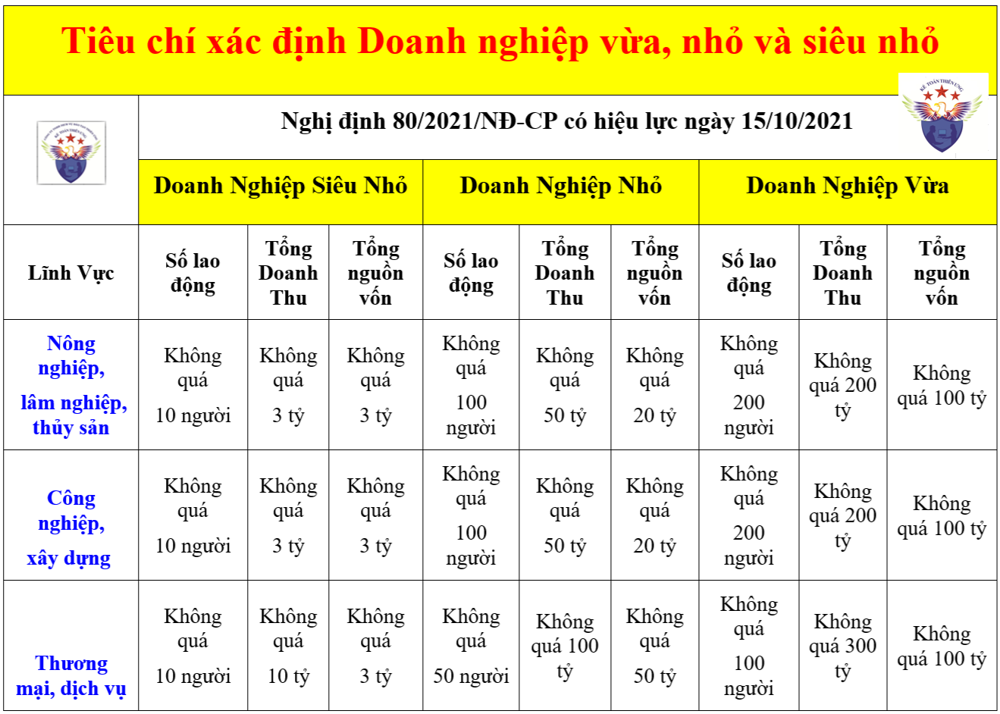

Hướng dẫn cách xác định doanh nghiệp vừa và nhỏ theo các tiêu chí được quy định tại Nghị định 80/2021/NĐ-CP quy định chi tiết và hướng dẫn Luật Hỗ trợ doanh nghiệp nhỏ và vừa số: 04/2017/QH14
Tổng quan về cách xác định quy mô doanh nghiệp vừa và nhỏ, siêu nhỏ theo từng lĩnh vực hoạt động như sau:

Chi tiết các quy định hướng dẫn về cách xác định doanh nghiệp vừa và nhỏ:
Theo Luật Hỗ trợ doanh nghiệp nhỏ và vừa số 04/2017/QH14 (Ban hành ngày 12/06/2017, có hiệu lực từ ngày 01/01/2018) thì:
Điều 4. Tiêu chí xác định doanh nghiệp nhỏ và vừa
1. Doanh nghiệp nhỏ và vừa bao gồm doanh nghiệp siêu nhỏ, doanh nghiệp nhỏ và doanh nghiệp vừa, có số lao động tham gia bảo hiểm xã hội bình quân năm không quá 200 người và đáp ứng một trong hai tiêu chí sau đây:
a) Tổng nguồn vốn không quá 100 tỷ đồng;
b) Tổng doanh thu của năm trước liền kề không quá 300 tỷ đồng.
2. Doanh nghiệp siêu nhỏ, doanh nghiệp nhỏ và doanh nghiệp vừa được xác định theo lĩnh vực nông nghiệp, lâm nghiệp, thủy sản; công nghiệp và xây dựng; thương mại và dịch vụ.
3. Chính phủ quy định chi tiết Điều này.
Và hiện nay, chính phủ đang quy định chi tiết các tiêu chí để xác định doanh nghiệp vừa và nhỏ tại Nghị định 80/2021/NĐ-CP, (Ban hành ngày 26/08/2021, có hiệu lực ngày 15/10/2021) như sau:
Điều 5. Tiêu chí xác định doanh nghiệp nhỏ và vừa
1. Doanh nghiệp siêu nhỏ trong lĩnh vực nông nghiệp, lâm nghiệp, thủy sản; lĩnh vực công nghiệp và xây dựng sử dụng lao động có tham gia bảo hiểm xã hội bình quân năm không quá 10 người và tổng doanh thu của năm không quá 3 tỷ đồng hoặc tổng nguồn vốn của năm không quá 3 tỷ đồng.
Doanh nghiệp siêu nhỏ trong lĩnh vực thương mại và dịch vụ sử dụng lao động có tham gia bảo hiểm xã hội bình quân năm không quá 10 người và tổng doanh thu của năm không quá 10 tỷ đồng hoặc tổng nguồn vốn của năm không quá 3 tỷ đồng.
2. Doanh nghiệp nhỏ trong lĩnh vực nông nghiệp, lâm nghiệp, thủy sản; lĩnh vực công nghiệp và xây dựng sử dụng lao động có tham gia bảo hiểm xã hội bình quân năm không quá 100 người và tổng doanh thu của năm không quá 50 tỷ đồng hoặc tổng nguồn vốn của năm không quá 20 tỷ đồng, nhưng không phải là doanh nghiệp siêu nhỏ theo quy định tại khoản 1 Điều này.
Doanh nghiệp nhỏ trong lĩnh vực thương mại và dịch vụ sử dụng lao động có tham gia bảo hiểm xã hội bình quân năm không quá 50 người và tổng doanh thu của năm không quá 100 tỷ đồng hoặc tổng nguồn vốn của năm không quá 50 tỷ đồng, nhưng không phải là doanh nghiệp siêu nhỏ theo quy định tại khoản 1 Điều này.
3. Doanh nghiệp vừa trong lĩnh vực nông nghiệp, lâm nghiệp, thủy sản; lĩnh vực công nghiệp và xây dựng sử dụng lao động có tham gia bảo hiểm xã hội bình quân năm không quá 200 người và tổng doanh thu của năm không quá 200 tỷ đồng hoặc tổng nguồn vốn của năm không quá 100 tỷ đồng, nhưng không phải là doanh nghiệp siêu nhỏ, doanh nghiệp nhỏ theo quy định tại khoản 1, khoản 2 Điều này.
Doanh nghiệp vừa trong lĩnh vực thương mại và dịch vụ sử dụng lao động có tham gia bảo hiểm xã hội bình quân năm không quá 100 người và tổng doanh thu của năm không quá 300 tỷ đồng hoặc tổng nguồn vốn của năm không quá 100 tỷ đồng, nhưng không phải là doanh nghiệp siêu nhỏ, doanh nghiệp nhỏ theo quy định tại khoản 1, khoản 2 Điều này.
===================================
Ngày 15/01/2026, chính phủ đã ban hành Nghị định số 20/2026/NĐ-CP để quy định chi tiết và hướng dẫn thi hành một số điều của Nghị quyết số 198/2025/QH15
Theo đó thì: Doanh nghiệp nhỏ và vừa mới thành lập được miễn thuế thu nhập doanh nghiệp 3 năm kể từ khi được cấp Giấy chứng nhận đăng ký doanh nghiệp lần đầu.
Chi tiết các bạn xem tại đây nhé: Miễn thuế TNDN 3 năm cho doanh nghiệp mới thành lập
=========================
Điều 6. Xác định lĩnh vực hoạt động của doanh nghiệp nhỏ và vừa
Lĩnh vực hoạt động của doanh nghiệp nhỏ và vừa được xác định căn cứ vào ngành, nghề kinh doanh chính mà doanh nghiệp đã đăng ký với cơ quan đăng ký kinh doanh.
Điều 7. Xác định số lao động sử dụng có tham gia bảo hiểm xã hội bình quân năm của doanh nghiệp nhỏ và vừa
1. Số lao động sử dụng có tham gia bảo hiểm xã hội là toàn bộ số lao động do doanh nghiệp quản lý, sử dụng và trả lương, trả công tham gia bảo hiểm xã hội theo pháp luật về bảo hiểm xã hội.
Số lao động sử dụng có tham gia bảo hiểm xã hội được hướng dẫn bởi khoản 1 Điều 2 Thông tư 06/2022/TT-BKHĐT có hiệu lực thi hành kể từ ngày 25/6/2022 như sau:
Số lao động sử dụng có tham gia bảo hiểm xã hội quy định tại khoản 1 Điều 7 Nghị định số 80/2021/NĐ-CP là tổng số lao động ký hợp đồng lao động không xác định thời hạn và lao động ký hợp đồng xác định thời hạn dưới 36 tháng của DNNVV có tham gia bảo hiểm xã hội. Trong đó, lao động ký hợp đồng xác định thời hạn dưới 36 tháng có thể do DNNVV hoặc đơn vị khác đóng bảo hiểm xã hội.
2. Số lao động sử dụng có tham gia bảo hiểm xã hội bình quân năm được tính bằng tổng số lao động sử dụng có tham gia bảo hiểm xã hội của tất cả các tháng trong năm trước liền kề chia cho 12 tháng.
Số lao động sử dụng có tham gia bảo hiểm xã hội của tháng được xác định tại thời điểm cuối tháng và căn cứ trên chứng từ nộp bảo hiểm xã hội của tháng đó mà doanh nghiệp nộp cho cơ quan bảo hiểm xã hội.
3. Trường hợp doanh nghiệp hoạt động dưới 01 năm, số lao động sử dụng có tham gia bảo hiểm xã hội bình quân năm được tính bằng tổng số lao động sử dụng có tham gia bảo hiểm xã hội của các tháng hoạt động chia cho số tháng hoạt động.
-------------------------------------------------------------------------
Điều 8. Xác định tổng nguồn vốn của doanh nghiệp nhỏ và vừa
1. Tổng nguồn vốn của năm được xác định trong bảng cân đối kế toán thể hiện trên Báo cáo tài chính của năm trước liền kề mà doanh nghiệp nộp cho cơ quan quản lý thuế. Tổng nguồn vốn của năm được xác định tại thời điểm cuối năm.
2. Trường hợp doanh nghiệp hoạt động dưới 01 năm, tổng nguồn vốn được xác định trong bảng cân đối kế toán của doanh nghiệp tại thời điểm cuối quý liền kề thời điểm doanh nghiệp đăng ký hưởng nội dung hỗ trợ.
Điều 9. Xác định tổng doanh thu của doanh nghiệp nhỏ và vừa
1. Tổng doanh thu của năm là tổng doanh thu bán hàng hóa, cung cấp dịch vụ của doanh nghiệp và được xác định trên Báo
cáo tài chính của năm trước liền kề mà doanh nghiệp nộp cho cơ quan quản lý thuế.
2. Trường hợp doanh nghiệp hoạt động dưới 01 năm hoặc trên 01 năm nhưng chưa phát sinh doanh thu thì doanh nghiệp căn cứ vào tiêu chí tổng nguồn vốn quy định tại Điều 8 Nghị định này để xác định doanh nghiệp nhỏ và vừa.
Điều 10. Xác định và kê khai doanh nghiệp nhỏ và vừa
1. Doanh nghiệp nhỏ và vừa căn cứ vào mẫu quy định tại Phụ lục ban hành kèm theo Nghị định này để tự xác định và kê khai quy mô là doanh nghiệp siêu nhỏ, doanh nghiệp nhỏ, doanh nghiệp vừa và nộp cho cơ quan, tổ chức hỗ trợ doanh nghiệp nhỏ và vừa. Doanh nghiệp nhỏ và vừa chịu trách nhiệm trước pháp luật về việc kê khai.
2. Trường hợp doanh nghiệp phát hiện kê khai quy mô không chính xác, doanh nghiệp chủ động thực hiện điều chỉnh và kê khai lại. Việc kê khai lại phải được thực hiện trước thời điểm doanh nghiệp nhỏ và vừa được hưởng nội dung hỗ trợ.
3. Trường hợp doanh nghiệp cố ý kê khai không trung thực về quy mô để được hưởng hỗ trợ thì doanh nghiệp phải chịu trách nhiệm trước pháp luật và hoàn trả toàn bộ kinh phí đã nhận hỗ trợ.
4. Căn cứ vào thời điểm doanh nghiệp đề xuất hỗ trợ, cơ quan, tổ chức hỗ trợ doanh nghiệp nhỏ và vừa đối chiếu thông tin về doanh nghiệp trên Cổng thông tin đăng ký doanh nghiệp quốc gia để xác định thông tin doanh nghiệp kê khai đảm bảo đúng đối tượng hỗ trợ.
-------------------------------------------------------------------------------------------------------
Kế toán Diệu Tâm chúc các bạn thành công!
Bạn muốn học làm kế toán tổng hợp - Thuế thực tế (Lập Báo cáo tài chính, Quyết toán thuế) có thể tham gia; Lớp học thực hành kế toán thực tế.
Kế toán Diệu Tâm chúc các bạn thành công!
Bạn muốn học làm kế toán tổng hợp - Thuế thực tế (Lập Báo cáo tài chính, Quyết toán thuế) có thể tham gia; Lớp học thực hành kế toán thực tế.
---------------------------------------------------------------------------------------------------------